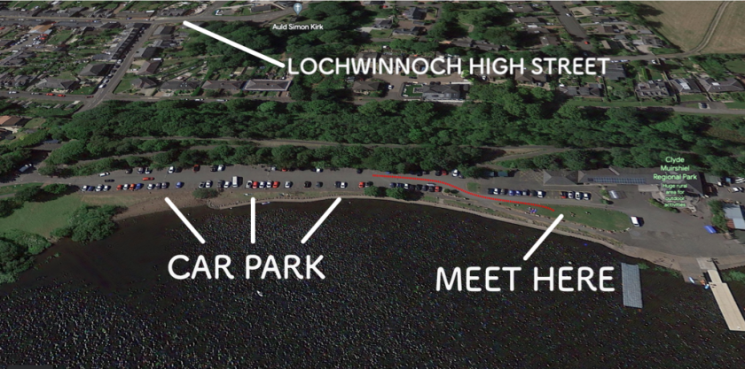

Location
Loch SUPCastle Semple Visitor Centre and Country Park,
Lochlip Road,
Lochwinnoch,
Renfrewshire,
PA12 4EA
See the: Visitor Centre directions page

When you get here
Loch SUPCastle Semple Visitor Centre and Country Park,
Lochlip Road,
Lochwinnoch,
Renfrewshire,
PA12 4EA
Follow the red line on the image. This takes you from the car park to the Grass Triangle where we will meet you.
See the: Google map of the location
